Return to previous page | Return to menu | Go to next page
When trying to divide a pentagon or more polygon into a triangle or a quadrilateral polygon, [Mesh] → [Edge] often does not draw an edge.
At that time,
"Error : * Can not create an edge that intersects existing edges."
And an error message is displayed. This is a phenomenon that occurs when the polygon to be split is twisted. What should I do if I want to connect two arbitrary points with a line? Here's an actual example of what to do.
[Get] → [Primitive] → [Grid]
When the window appears, set the size to
X Cell Size: 1.0
Z Cell Size: 1.0
X Cell Count: 1
Z Cell Count: 1
Check “Polygon” and click “OK”.
A single polygon is created as shown below (Figure 5-20).
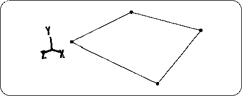
[Mesh] → [Vertex] → Mouse middle button (Add middle vertex)
Then hit the middle point as shown below (Figure 5-21).
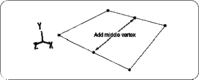
Next, change from OBJ mode to TAG mode (click directly in the lower right window). Add TAG to the points shown in the figure below (Figure 5-22). (Enclose with "T" key + left mouse button ).
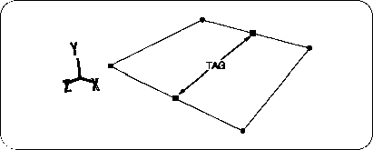
Click the triangle part of the “Scale” icon to open the numerical input window. Then enter X: 1, Y: 1, Z: 2 and click “Add” (note that it is not “Set”). It will look like the following figure (Figure 5-23).
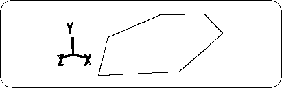
Remove TAG (enclose with "T" key + middle mouse button ). Next, in TAG mode, add TAG to the points shown in the figure below (Figure 5-24).
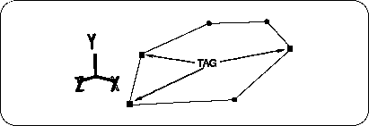
Click the triangle of the “Trans” icon to bring up the numerical input window.
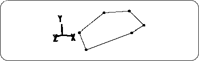
Please remove TAG. (Enclose with "T" key + middle mouse button ). 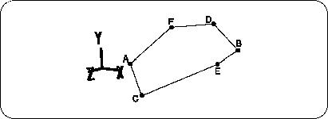
Probably not,
Connect the BCs shown in the figure below with edges (this polygon can be connected here) (Figure 5-27).
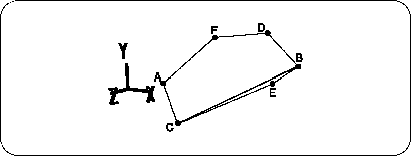
Next, between the ABs that couldn't be connected,
If that doesn't work, try the next method.
First, connect two points that do not include the target point. 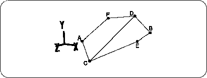
Next, on the line segment CD, 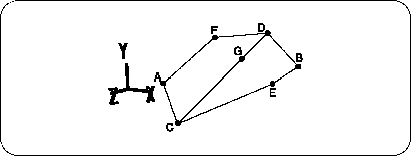
And connect AG.
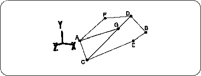
If you can connect GB here, it will be close to completion, but with this polygon you can not draw a line between GB. 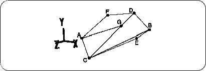
This way! You will be able to draw a line between GB. 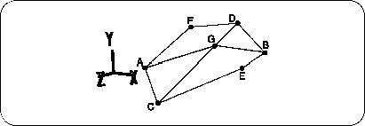
Next, line segments CG and GD, 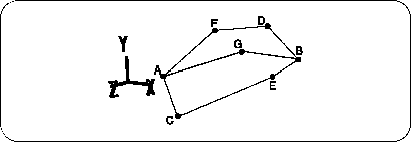
Now, it ’s the final finish. 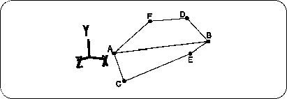
Try to challenge vertices that cannot be connected by these methods.
Figure 5-25 Completion of twisted polygon
Now we have a twisted polygon. Let's experiment here.
Replace point A and point B shown in the figure below (Figure 5-26) with
[Mesh] → [Edge] → Left mouse button
Tie with. (For future convenience, other remaining points are also marked.)
Figure 5-26 AB cannot be connected suddenly
"Error : * Can not create an edge that intersects existing edges."
I think an error message was displayed.
But what if you really want to connect AB?
Proceed to Solution 1 and 2 below.
Solution # 1: How to cut with a triangle from the end
Figure 5-27 First connecting the BCs
[Mesh] → [Edge] → Left mouse button
And when you click on two points ... how! Can be tied
[Mesh] → [Edge] → Right mouse button
Please erase it.
In this way, by creating a triangle that includes one target point (in this case, point A or point B), you can draw a line that could not be drawn until now.
If you can't get it done just by making one triangle, try making triangles from the edges.
Solution # 2: Start with two points that do not include the target point
There are several possible combinations for this polygon, but this time we will connect the CDs (Figure 5-28).
Figure 5-28 Connecting CDs
[Mesh] → [Vertex] → Left mouse button (Add vertex)
Then hit the appropriate points. This is point G (Figure 5-29).
Figure 5-29 Hit point G
Figure 5-30 Connecting AGs
Recall the method used in “Solution 1”.
For now, make a triangle. Here, BC can be connected (Figure 5-31).
Figure 5-31 BC is connected
After connecting GB with a line, the line between BC is
[Mesh] → [Edge] → Right mouse button (Remove edge)
Delete with (Figure 5-32).
Figure 5-32 Connect GB and erase BC
[Mesh] → [Edge] → Right mouse button (Remove edge)
Delete with (Figure 5-33).
Figure 5-33 Erase line segments CG and GD
[Mesh] → [Vertex] → Mouse right button (Remove vertex)
Delete point G with (Fig. 5-34).
Figure 5-34 Erase point G